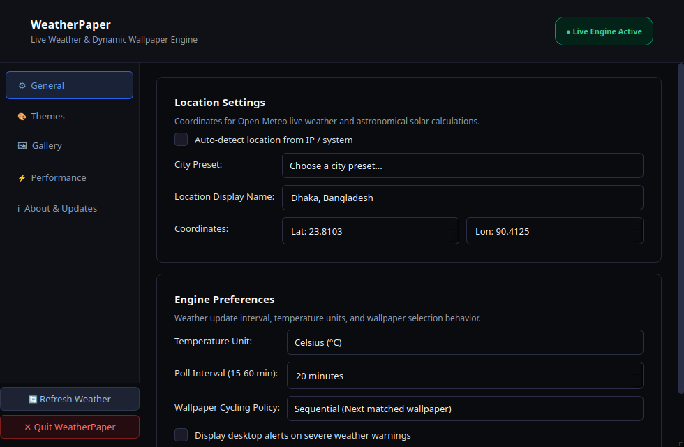

WeatherPaper dynamically transforms your desktop background in real time to mirror live weather conditions and celestial solar cycles. Native C++20. Under 40 MB of RAM. Zero idle CPU.
chmod +x weatherpaper-installer.run && ./weatherpaper-installer.run

Designed from the ground up to be lightweight, respectful of your system battery, and delightful to look at every single day.
Automatically synchronizes with live weather conditions including rainfall, snow, thunder, clear skies, and fog via Open-Meteo with no API key required.
Computes exact local sunrise, golden hour, twilight, and astronomical night for your latitude and longitude to seamlessly progress wallpapers throughout the day.
Drag any image or video straight from your file manager into the app. Smart keyword detection automatically tags files based on names like night, rain, and sunset.
Whenever you tag a picture, adjust sizing, or click Refresh, your wallpaper immediately updates in less than 1 second — no need to close and restart the application.
Written in modern C++20 with event-driven timers. Consumes less than 40 MB of RAM, 0% CPU at idle, and automatically pauses during full-screen games or battery saver mode.
Native desktop integration across GNOME, KDE Plasma, XFCE, Sway, and Cinnamon on Linux, and Windows 10 & 11 Desktop Wallpaper APIs.
Choose your operating system. Free, open-source, and guaranteed free of ads, tracking, or bundled junk.
Self-extracting binary that sets up all files, desktop menu shortcuts, and login autostart automatically without root.
./weatherpaper-installer.run
.run installer file.Standard Debian and Ubuntu system package for seamless integration with apt and system package managers.
sudo dpkg -i weatherpaper-*.deb && sudo apt-get install -f
.deb package.weatherpaperd.Universal standalone tarball for any Linux distribution (Arch, Fedora, openSUSE, Alpine, Void).
tar -xzf weatherpaper-*.tar.gz
./bin/weatherpaperd directly.Get started in less than 60 seconds with our streamlined desktop interface.
WeatherPaper runs discreetly in your top bar or system tray. Right-click the cloud icon to access Settings, Gallery, or force an instant refresh.
Open the Gallery tab and drag any photo or video directly into the drop zone. Supports PNG, JPG, WebP, MP4, and WebM.
Select your image and check the matching weather (Rain, Sunny, Cloud, Fog, Snow) and solar time (Day, Night, Dawn, Dusk). Smart auto-tagging pre-selects them for you.
Click 🔄 Refresh Wallpaper or toggle tags. Your wallpaper changes in under a second without restarting the software.
Everything you need to know about performance, data privacy, and operation.
.deb, run sudo apt remove weatherpaper. If installed via the one-click installer, simply delete ~/.local/bin/weatherpaperd and ~/.local/share/applications/weatherpaper.desktop. On Windows, use Windows Settings → Apps → Installed apps → Uninstall.